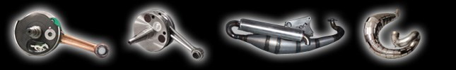
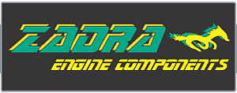
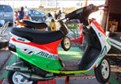
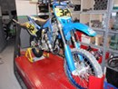
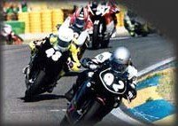
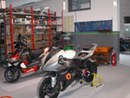
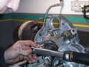
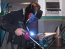
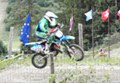
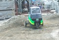

CH 1
Marmitte e parti speciali
Progettazione e produzione di marmitte e parti speciali per motori.

Officina meccanica a Mezzolombardo dal 1997, con il banco prova di potenza inerziale dove testiamo i nostri prodotti e i motori dei clienti.
Specializzati nel motore 2 tempi, seguiamo anche i 4 tempi e i nuovi motori elettrici. Molti articoli sono di nostra produzione, progettati e testati qui.

Progettazione e produzione di marmitte e parti speciali per motori.

Preparazione completa di motori 2 e 4 tempi, anche per uso agonistico.

Officina attrezzata con banco prova potenza: test dei nostri prodotti e prove potenza per i clienti.

Seguiamo i piloti anche in gara.
Scegliete la marca: ecco i modelli per cui abbiamo prodotti. Per ordinare basta una email o una telefonata.
Espansioni su misura. Se il vostro mezzo non è nella lista, l'espansione si progetta su misura e si prova al banco.
Marco Zadra, classe 1974, cresciuto a Roverè della Luna.
«Credo ancora nel potenziale del 2 tempi, ma soprattutto credo nella mia voglia e nella mia capacità di migliorarlo per renderlo nuovamente utilizzabile per le nuove esigenze richieste.»
Le nostre realizzazioni e tante moto dei nostri clienti.





Per ordinare i prodotti Zadra: una email a info@zadraengine.it oppure una telefonata allo 0461 602888.
Zadra Engine Components Snc di Zadra Marco e C. · Via Trento 95, 38017 Mezzolombardo (TN) · P.IVA 01567370224